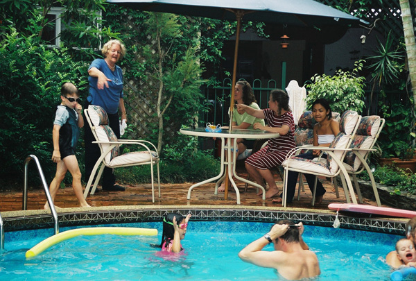
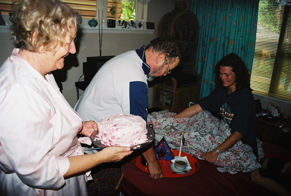
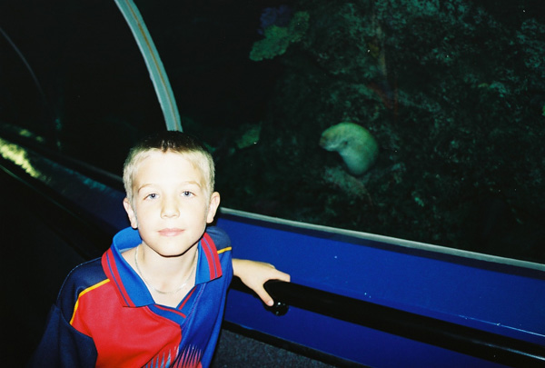
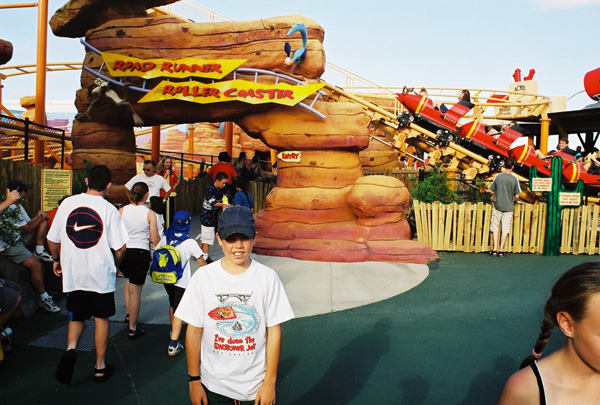
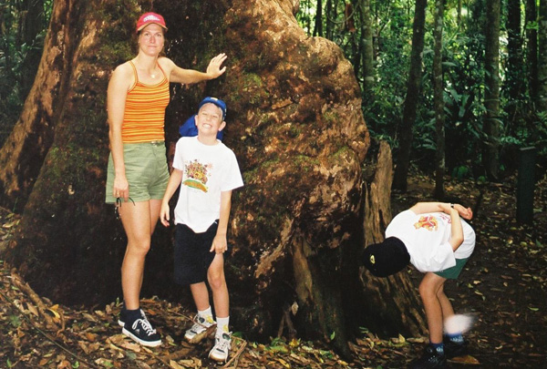
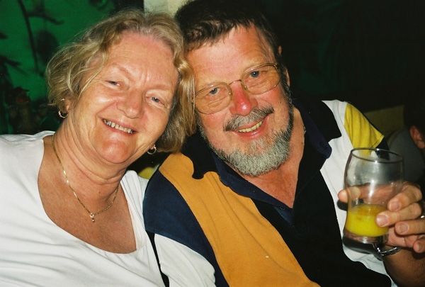
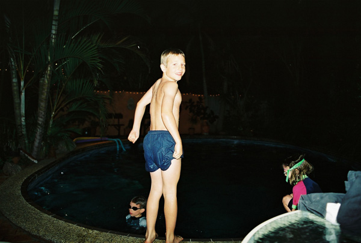

Australien: Brisbane
Den första veckan i Australien bodde vi hos Jonas föräldrar Uffe och Karin. Med utgångspunkt Brisbane tog de med oss på äventyr i näromårdet. Se bilderna från regnskogen, Underwater World, Movie World bland mycket annat.
Klicka på en bild för att visa bilderna för den dagen i ett bildspel.

27 december:
Första dagen i Australien. Poolbad och middag hos Uffe och Karin.

28 december:
Mamma Ann fyller år och barnen spelar Monopol.

29 december:
Underwater World med hajar och jättekäftar.

30 december:
Warner Bros Movie World med Uffe, Snurre Sprätt och Catwoman.

31 december:
Nyårsafton: Regnskogstur, Swedish Corner och Surfers Paradise.

1 januari:
Middag med hela Australien-gänget på vietnamesisk restaurang.

2 januari:
Sista kvällen i Brisbane med bad i poolen.